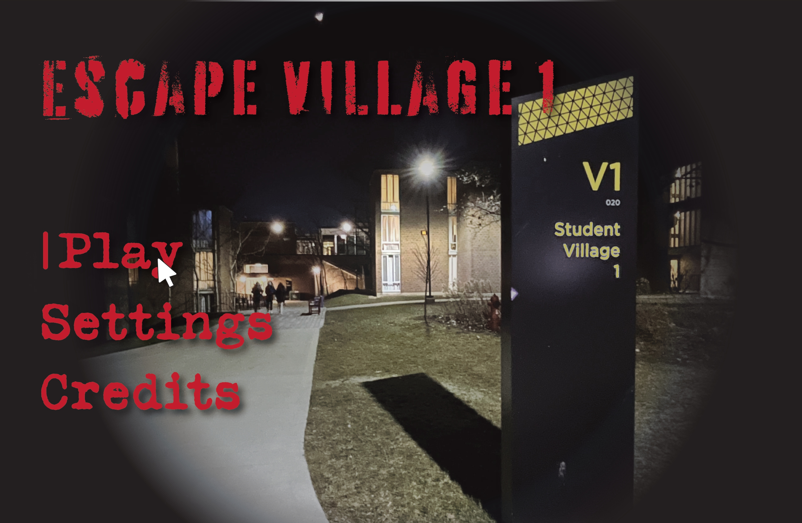
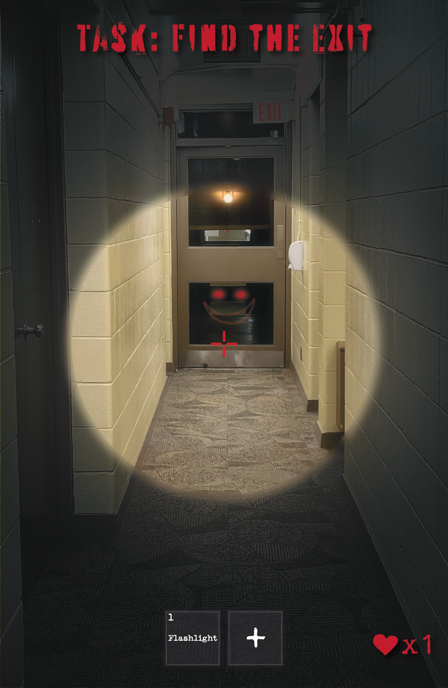

Magazine
Tasked with designing and printing a magazine that showcases the three projects from the GBDA 101 - Introduction to Digital Media Design. I used Adobe Illustrator to create the visual elements and Adobe InDesign to assemble the final layout.

Assignment 1: Logo Design
I created a logo based on a classmate's personality translating their traits into visual design elements. My classmate was a very extroverted and outgoing person who loves expressing themselves through music. The result was a personalized brand mark that reflected their cheerful and outgoing personality and their love for music.
Assignment 2: Horror-Themed Diptych Posters
Using self-taken photographs of Waterloo's Village 1 residence, I created a horror-themed diptych that reflected my eerie first impressions of the residence. This project helped me improve my photography, composition, and visual storytelling skills. I also utilized my background in game design to craft the poster's layout and visual elements, and overall had a lot of fun with the project.


Assignment 3: Designing an Emotion
I was assigned to design an object that evoked the emotion "delight". I brainstormed, prototyped, and tested designs while exploring how color and form can be used intentionally to create emotional responses in users. My final prototype was a pastel pink and white heart-shaped wand molded out of air-dry clay that acts as a sugar sprinkler.